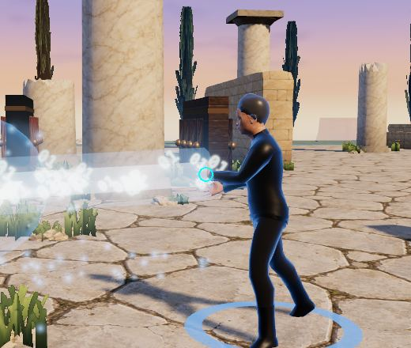
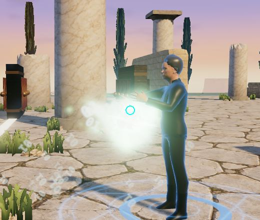
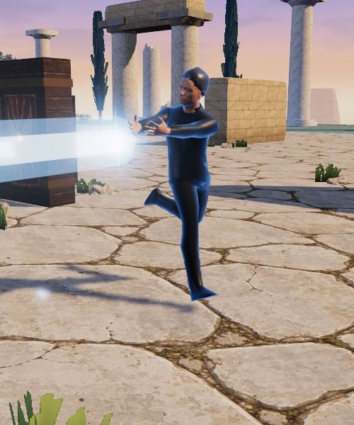
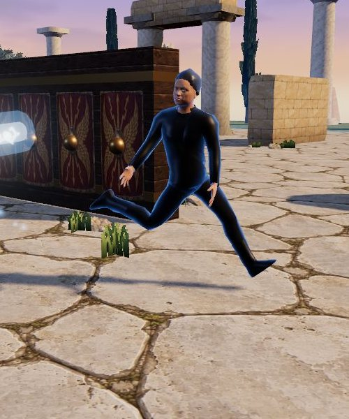

Building the Forge goal
Your six frames set the target. A lot of what makes them work is timing and light, and both cost far less than polygons. Goku's blast in the second frame reads because his back foot is planted, his hips have turned and the ball sits in his hand for a beat before it leaves.
Our heroes skip that beat.
Press a skill today and the engine lands the hit on the same tick, while the arm only starts to swing afterwards, so the impact can show up before the hand has moved at all.
So the plan starts underneath the art. We measure first, then give every move a real wind-up, then prove the look on one hero before rolling it out to twenty. And this Mac is your baseline machine, an M1 MacBook Air with 8 GB, so every number in the plan comes from the hardware you named.
Where we stand
I checked each of your eight points against the code before writing this.
- Point 5 mostly exists. The AI and a human both produce the same command, and both go through the same engine tick and the same cast function. But nothing proves it yet, so it'll need a test.
- Point 6 is the biggest gap. Skills fire on the tick you press them. A second swing of the same skill doesn't restart its animation, because the clip player ignores a request for the clip that's already playing. Heroes go from standing to full speed in one frame, and there's no strafing or turning on the spot.
- Point 2 is half done. The engine already owns the numbers you listed, and skill looks sit outside the balance gate. Action timing is the piece it doesn't own yet.
- Point 3 has strong bones. There are 13 cast poses and 16 elements, and every skill can pick its own impact and trail. What's missing is sound per skill and any choreography for weapons. To earshot, today's six sounds read like an app, with a UI click and an error buzz where the punches and beams should be. Only the heavy hit sounds like a hit.
- Point 1 is half done. The Forge takes chat and reference photos, but every turn returns a whole new draft, and nothing in the code holds the other parts still when you ask for one change.
- Point 4 exists for gear pieces, which have a searchable library and a generation queue. Nothing else has a shared search or a versioned cache yet.
- Point 7 is half done. The Forge's Try it button already drops your draft hero into a real match against a training dummy, with both cameras. What it can't do yet is fire a chosen skill on demand or on repeat, and nothing checks whether the effects can be seen.
- Point 8 is partly there. A frame-rate guard steps quality down four times and only lowers resolution at the last step. The bench runs synthetic load, and nothing plays a real ten-minute battle and reports what its spikes and memory did.
The order I recommend
Every phase after the first has to pass the soak test before it counts as done.
Phase 0. Measure first
A soak test that plays real 20-hero matches back to back for at least ten minutes, at the Air's default 1440 by 900 Retina resolution. Every 15 seconds it fires several ultimates at once, and one hero is driven through the human command path from the third-person camera.
It reports frame times at the median and the 95th and 99th percentiles, and every spike over 33 ms along with what was on screen at the time. It also tracks the JavaScript heap and the GPU process, and it counts geometries and textures across matches, which is where leaks show up first.
Then adaptive resolution. The render scale moves smoothly with frame time and comes before every other quality cut. A Retina Air draws four pixels for every one in the window, so I'd bet resolution is most of the cost.
Done when the report is repeatable and today's numbers are written down.
Here are today's numbers. Each run used a production build on this Air at 1440 by 900 Retina, with ten minutes of back-to-back 10v10s and six ultimates forced every 15 seconds.
- Before the fix, fight frames had a median of 16.7 ms, a 99th percentile of 34.3 ms and 55 frames over 100 ms, the worst at 2.75 seconds. The guard changed level 19 times, and its shadow and bloom switches caused the longest freezes.
- After the fix, the median held at 16.7 ms and the 99th percentile sat right on the 33.4 ms line. Only 2 frames went over 100 ms, the worst at 517 ms, and quality never left full. Resolution did all the work, moving between 1x and 2x.
- Memory leaks. With garbage collected before each fight, the heap grew from 33 MB to 73 MB over six fights, about 8 MB a match. The renderer process stayed between 356 and 700 MB, while the Mac kept about 6 GB in swap the whole time.
Three performance jobs were left after that run, and I've done all three.
The leak was whole matches. three keeps a few textures for good, like a lookup table its lighting reads, and every renderer that drew one left a listener on it. That listener held the renderer, and the renderer held every scene it drew, so each finished match stayed in memory. Now a renderer lets go of everything it bound before it's thrown away. Five matches in a row used to climb from 51 to 67 MB, and now they hold at 55 MB from the second match on.
Each match also starts at the resolution the last one settled on, instead of jumping back to 2x and finding out again. And every effect draws once, out of sight, during the countdown, so its shaders compile before the first ultimate. The 517 ms stall on the first casts is gone.
Memory now passes the soak.
On phase 1's build the heap at each fight's start held between 155 and 186 MB, where the old build climbed from 159 to 295 MB.
The frame numbers taught me something about the soak itself. Its morning run of the old build had 34 fight frames over 50 ms. By late morning, after hours of balance runs on a fanless Air, the same build had 152. Phase 1's build, run just before and just after it, had 91 and 127.
So phase 1 isn't what made frames slower. The machine was.
A fair soak needs a cool machine, so I'd start the acceptance run in phase 7 from one.
No run passes the soak's frame grade yet, before phase 1 or after.
That grade asks for a 99th percentile at or under 33.4 ms and no fight frame over 100 ms. It's the acceptance run's job, with the director camera and the new look on top.
Phase 1. Give every move weight
The engine gets prep, release and recovery for all 301 skill templates, with defaults per delivery family and pose and overrides where a skill needs them. Nothing lands until the release. Each clip stretches so its release frame lands on the engine's release tick, and repeated attacks restart. Heroes will ease in and out of a run and strafe around their target, with feet that stay planted and an upper body that twists toward the aim.
Effects leave from the hand or weapon socket. Impacts appear where and when the engine says the hit landed, and weapon trails follow the blade. A parity test feeds the same commands once as the AI and once as a human and expects identical match hashes.
Sound follows the same beats. You hear a wind-up on prep, a whoosh on release and the hit on contact, so the weight comes through your ears as well as your eyes.
But slower skills move balance, so this phase ends with a gate re-tune and a full sim.
Done when every hit follows a release and frozen probe reads put the hand at the effect's origin on the release frame. Both hold now.
Phase 1 is in.
All 301 skill templates now wind up, release and recover, and nothing lands before its release. A basic attack spends most of its interval on the swing. An ultimate winds up 1.8 times longer than a skill of the same kind and roots its caster while it does.
Stuns, knock-ups and pushes cut a wind-up short. Interrupts are a real play now.
Our heroes' bodies follow the engine too. Each cast clip runs on the match clock and stretches so its release frame lands on the release tick. A second swing restarts its clip.
Legs follow where a hero is going while the chest turns toward the target, and a hero backing away runs backwards. Shots and beams leave the leading palm. A charge glows in the hands through the wind-up, and melee swings leave a smear that follows the hand or the blade.
I checked with the probe. Jensen faced a training dummy at quarter speed, and the match froze on each release. His beam left on its release tick from a palm 0.46 m in front of him at chest height.
His skill's orb left from 0.52 m out, while the engine's own start point sits inside his chest, so the drawn shot eases onto the engine's line over its first 0.15 seconds. What you see and what the engine scores never drift apart.


You can hear the beats too. A riser tops out on the release, a swish peaks 50 ms before contact and the hit lands on contact. earshot timed them and found 93% of cues within 100 ms of their events.
The light hit still sounds like a kick drum. Phase 2 brings recorded foley for that.
And the parity test passes, so the same commands give the same match, tick for tick, whether the AI sends them or a player does.
Then balance moved, as this plan said it would, though not the way I expected.
Wind-ups made control strong and melee weak. A fighter who slows down to swing never catches a mage who doesn't, so fighters fell from 49% against the field to 34.5% while controllers rose from 43.5% to 56%.
One rule did most of it. Heroes slowed down through every basic attack, and without that slowdown fighters were back at 46.5%. So basics now keep 85 to 90% of their speed through the wind-up and all of it after. Only an ultimate roots you.
The re-tune also caught a flaw in our tuner. It aims each role's median kit at 50%, and when a role's sampled kits are weaker than its default, no damage level gets them all there. So every round raised every role, by 3 to 48% in round one and another 15% in round two.
Raising everyone isn't neutral either. With every role at 1.28 times its damage, fights got shorter. Controllers lost 8 points and assassins gained 6, because short fights reward burst.
So we now step each role toward the group's average, which keeps the overall damage where it was. After three passes the gap between the strongest and weakest role's median kit shrank from 16.5 points to 7.5. Every default build sits between 41.5% and 53.5%, under the 55% ceiling.
One skill needed its own cut. The controller's Chill Ray slowed its target on every basic attack, which kept melee from ever closing in, and one retune step on it took the controller from 57% to 50%.
All 20 demo heroes pass the gate. So do the full sim and the test suite.
Big fights look the way they did before phase 1. Across 24 crossed 10v10 matches the moguls won 15 and the leaders 9, the same split as our last balance pass.
Assassins are still the weakest role in a crowd, alive for 36% of a fight where they used to last 44%. Macron dies in every match. The gate tunes in 3v3, where he's strong enough that it nerfs him, so this is about how assassins dive into ten-hero crowds. I'd fix it in the AI, not his numbers.
Two pieces didn't make it. Heroes still go from standing to full speed in a single frame, and nothing pins their feet to the ground yet. Both belong with Jensen's new clips, so they move to phase 2 with him.
Phase 2. One hero at full quality
Before rolling anything out, I'd build one vertical slice. That's Jensen Huang, since your third frame already shows him, rebuilt in anime realism and throwing his chip volley at full performance under golden-hour light, seen from both the autobattler and the third-person camera.
His look comes from one Tripo generation, and you've set the budget at the 75 credits you can see. Here's how I'd spend them. A mesh comes out in the pose of its picture, and a throwing pose can't be rigged, so first comes a clean picture of your anime Jensen standing front-on with his arms a little out from his sides, made from your frame without touching the credits.
Then one image-to-3D job on Tripo's H3.1 model with detailed texture, for 40 credits. A free rig check comes next, and then Tripo's auto rig on the Mixamo skeleton our clips already use, for 25. That leaves 10 spare. If the rig check fails, we rig him ourselves in Blender rather than spend again.
There's one snag. The API key in .env.local still sees 0 credits, which I checked on 2026-10-30 with Tripo's free balance call. Your 75 are probably on the web studio, which keeps a balance of its own. So either the credits reach the API account, or you run the one job in the studio with the picture and settings I'll have ready.
He also gets the two pieces of movement phase 1 left out. Half of that is built now, and it works for every hero, not only him.
Feet used to slide. The run clip is keyed for about 4 m/s, but heroes move at 5.6 to 9, and it played at its normal speed anyway, so a planted foot skated forward under the body. Casting on the move was worse. The whole body played the cast, so the legs froze in the cast's stance while the hero glided along at full speed.
Now each body's run is measured once when it loads, by how fast a planted foot slides back under the hips, and the run plays at the hero's real speed over that. For Jensen at full speed that's 1.9 times as fast as before. A cast on the move splits at the hips. The arms and chest play the cast, turned toward the aim, while the legs keep running in step.


I measured it with Jensen strafing past a dummy at 7.7 m/s. While he cast, a planted foot used to slide at 7.7 m/s, the full speed of his body. Now it slides at 0.47 m/s on the median frame, and a plain run is at 0.76. Standing still and casting reads 0.4 on the same measure, so that's about as low as it goes.
Standing still was the other half. A standing hero's hips used to follow every change of aim, so both feet swung in little arcs. And the cast clips slide a foot all by themselves. Their stance swings the legs apart from feet-together, so the back foot skated up to 38 cm on every two-handed cast.
Now a standing hero's feet stay where they land. The legs bend to keep each ankle in place as a cast leans the body over them, and the chest follows the aim while the hips hold. Once the aim is 45° round, the hips turn to face it and the feet step round with them, one at a time, each lifting in a short arc.
On standing casts, one frame in ten used to have a foot slipping faster than 5.7 m/s. Now no planted foot moves at all, and it costs about a tenth of a millisecond a frame for all 20 heroes.
Fixing that turned up an older flaw. A hero ran forwards until its aim was 140° off its path, but the chest only twists 100°, so in between the hips got dragged sideways and the feet skidded. Running backwards now starts at 100°, and with that, a planted foot slips 0.39 m/s on the median frame while he casts on the move.
One thing is left. Heroes still reach full speed in one frame, so the first steps of every run slide. Easing that in changes how fast they close distance, so it needs a balance re-tune, and I'd do it after his clips are in.
He gets real sound too. Each of his skills gets a wind-up, a release and a hit, the arena gets ambience and music under the fight, and earshot checks every one by ear before it goes in.
The camera stays where it is for now. You want sound, movement and animation to feel cinematic first, and the camera work comes after that, in phase 6.
Done when you've compared the slice with your frames and liked it.
Phase 3. The Forge training ground
Try it already runs the real engine against a training dummy, so this phase turns it into a practice room. You pick a skill and fire it once or on repeat, trigger the transformation and slow time down to watch the contact frame, from the overview camera or the third-person one. The probe flags any effect that the hero's own body or cape hides from the default camera, and you accept the hero from here.
Done when every skill and the transformation can be inspected in the practice room before you accept.
Phase 4. Describe and revise one part at a time
The hero becomes a document with named parts. Body, face, hair, outfit, weapon, basic attack, both skills, movement, passive and ultimate each get an address, and each skill keeps its mechanic apart from its performance. A revision request goes to Haiku 5.5 with the current document and comes back as a patch that names the parts it touches. The server applies only those parts, which turns "keep everything, change the ultimate" into a rule the code enforces.
A request beyond the engine gets the nearest playable version and a plain line saying what changed, which the player can revise. Reuse comes before generation for every kind of asset, and approved results are cached with their rig and style versions. Each skill also gets its own sound, made in code and checked by ear with earshot.
Done when a test set of revision requests changes only the parts each one names.
Phase 5. Roll the look out
All 20 starters move to anime realism. The world gets the ivy and the far mountains from your frames, drawn cheaply, and the effects get brighter cores with sparks and dust where they land.
Phase 6. Director mode
Once sound, movement and animation feel cinematic, the autobattler gets a director. It's an automatic camera that finds the main fight, moves in closer and lower, and cuts to wind-ups, ultimates and knockouts the way an anime fight is framed.
That's where the size gap closes. The probe measured today's heroes at 28 to 104 pixels tall in a 1920 by 943 window, and your overview frame puts them at about 200 to 300.
Done when you'd happily watch a whole match through it.
Phase 7. The acceptance run
The full soak on this Air for at least ten minutes under the worst load we can script, with the director camera on, then the sim gate and a visual review against your frames.
What could go wrong
Timing will move balance. Slower skills change damage per second and the AI's habits, and one gate run takes ten minutes or more, so phase 1 needs a real re-tune budget. It did move, and the re-tune is written up under phase 1.
The Air's memory is tight. Twenty heroes with close-up textures need compressed textures and lighter meshes at a distance, and nothing else heavy can run during a soak.
Real faces in anime style are the riskiest art call. I'd lean on silhouette for likeness, things like hair shape and glasses, and the photo patch we paint on today may fight the new shading. The slice in phase 2 is where we find out.
A generated Jensen comes out as one mesh, with his jacket part of his body. That's fine for a built-in hero, but the Forge revises one part at a time, so phase 4 has to settle whether players get whole generated characters or generated heads on our shared bodies and wardrobe.
The rig has no finger bones, and half of your reference poses are open palms and claws. We'll need hand variants or finger bones, and finger bones mean re-exporting every clip.
Your frames include Dragon Ball characters. I'm treating them as style reference only. Built-in heroes stay our own, and anything players make goes through the moderation we already have.
Your decisions
You answered these on 2026-10-30.
- The order stands as written.
- Jensen is the slice.
- The camera waits. Sound, body movement and animation come first, and then a director mode with an automatic anime camera, which is now phase 6.
- One generated character from the 75 Tripo credits, with no mistakes. You're sorting out the failed payment. The API key still sees 0 credits, so the open question is whether the 75 move to the API account or you run the one job in the web studio.
- Commit the probe and listener work if it's safe. It's done in
2fdb142, with the soak test in269bdc3and the quality fix in9e34472, all onfeat/dev-probe. Phase 1 isfaf9ce5onfeat/action-timing, which sits on top, and the planted feet areef2cd88andb59a6bconfeat/planted-feet, above that. The full suite passed before each one, the production build carries no probe code, and nothing is pushed.